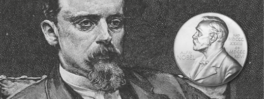

Henryk Adam Aleksander Pius Sienkiewicz 5 Mayıs 1846’da Polonya’da doğdu. 1914’te başladığı Lejyonlar romanını bitiremeden 15 Kasım 1916’da İsviçre’de öldü.

Lise eğitiminin ardından tıp ve tarih-filoloji eğitimi aldı. Genç bir muhabir olarak çalıştığı dergi için Amerika’yı ve Avrupa’yı gezdi. “Epik bir yazar olarak seçkin meziyetleri nedeniyle” Henryk Sienkiewicz’e 1905’te Nobel Edebiyat Ödülü lâyık görülmüştür.1
Yazar olarak isminin günümüze kadar gelmesini sağlayan Üçleme (Demir ve Ateş 1883, Tufan 1886, Bay Wolodyjowski 1888), Quo Vadis? ve Töton Şövalyeleri gibi eserleriyle tarih ile edebiyatı etkin bir dille satırlara dökmüş olan yazar, Polonya tarihini ve Hristiyanlığın çileli ilk dönemlerini eserlerinde yoğun olarak işlemiştir. Yurttaşlık bilincini milletinin zor günlerinde canlı kılmak için özel bir çaba sarf etmiş ve romanlarında doğrudan ya da dolaylı olarak alt metinde hep bu gayeyi gözetmiştir.
“Üçleme”sinin ilk cildi Demir ve Ateş’te (Ogniem i Mieczem, 1883) Polonya-Kozak Savaşı’nı, ikincisi Tufan’da (Potop, 1886) İsveç’in Polonya işgalini, son cilt Bay Wolodyjowski’de (Pan Wolodyjowski, 1888) ise 1673’te Osmanlılarla yapılan Hotin Savaşı’nı arka fon olarak kullanmış ve büyük eserlerin olmazsa olmazı aşk kavramını da yoğun tarihsel metinlerine ustalıkla yedirmiştir. Meselenin çarpıcı tarafı, Demir ve Ateş’in yazıldığı yıllarda Polonya’nın Almanya, Avusturya-Macaristan ve Rusya arasında pay edilmiş, harita üzerinde nâmevcut bir ülke olmasıdır.
Henryk Sienkiewicz üçlemenin son cildini yazmadan bir yıl önce Osmanlı ve İslâm coğrafyasıyla kültürünü daha yakından tanımak için İstanbul’a gelmiştir. Bu noktada insan düşünmeden edemiyor; acaba yazar ile yazarın elinizdeki bu iki minik öyküsünü tercüme edip, öyküleri 1900’de Artin Asadoryan Şirket-i Mürettibiyye Matbaası’nda bastıran Ahmet Rasim’in yolları kesişmiş midir? Kesiştiyse, bir gün aralarındaki münasebetin boyutuna şahit olabileceğimiz yeni belgeler gün yüzüne çıkar mı, bu belgeler farklı bir hikâyenin konusu olabilir mi?
Sienkiewicz'in eserleri, dilimize yapılan ilk tercümelerinden itibaren günümüze kadar uzanan süre içerisinde müteaddit defalar farklı yayınevleri ve Milli Eğitim Bakanlığı Yayınları'nca basılmıştır. Bunların içinde Demir ve Ateş (kimi yayınevlerince Ateş ve Kılıç ya da Ateş ve Kılıçla adıyla), Töton Şövalyeleri, Emekdar, İki Bakkal, Fener Bekçisi (Heynrik Sienkieviç adıyla) kitaplarıyla Milliyet Çocuk Dergisi’nde yayınlanan Çölde Serüven isimli çizgi romanını sayabiliriz.
Henryk Sienkiewicz’in Türkçeye kazandırılan kitapları arasında, elbette, en çok dikkat çekeni ise 1896 basımlı, dinî ve tarih içerikli olan Quo Vadis?’dir. Hristiyanların Roma İmparatorluğu’nda maruz kaldıkları baskıyı tasvir eden bu roman ülkemizde kimi zaman Kovadis adıyla basılmış olsa da daha ziyade “Quo Vadis?” ismi tercih edilmiştir. Bu Latince deyim çok sevilmiş olacak ki; deyimi 1950’lerden bu yana yerel ve ulusal basında pek çok yazar köşe ismi olarak kullanagelmiştir.
Sienkiewicz’in eserleri pek çok kez beyaz perdeye de yansıtılmıştır. Quo Vadis?’in 1951 tarihli versiyonunda, İnce Memed filmindeki Abdi Ağa rolüyle yakından tanıdığımız Peter Ustinov, Neron karakteriyle unutulmaz bir performans sergilemiştir.
Kullanımı çok sevilen Quo Vadis? kalıbının çıkış noktasına gelince... Rivayete göre Hz. İsa’nın havarisi Aziz Petrus, Neron’un Hristiyanlara yaptığı zulümlerden bunalarak ümitsizliğe kapılmış ve Roma’dan ayrılırken, Appia Yolu’nda, göğe yükselişinin üzerinden yıllar geçmiş olan Hz. İsa'yı bir ışık huzmesi şeklinde görmüştür. O anki şaşkınlığı ile “Domine, Quo Vadis?” (Nereye gidiyorsunuz hazret?) diye sorar. Hz. İsa’nın cevabı, havarisinin aydınlatılmayı bekleyen Roma halkını bırakıp kaçtığı için tekrar acı çekmek ve çarmıha gerilmek üzere Roma’ya gideceği şeklindedir. Bu, havari için alınması gereken bir ders olur. Havari geri döner ve dinini yaymak için daha büyük bir mücadeleye başlar. Peygamber yerine çarmıha gerilerek misyonunu tamamlar.
Şu an ülkemizde Nobelli yazar Sienkiewicz'in yalnızca iki eseri raflarda bulunuyor. Biri Literatür Yayınları’ndan Nihal Yeğinobalı çevirisiyle çıkan Quo Vadis?; diğeri Plato Film Yayınları’ndan Okay Gönensin çevirisiyle çıkan Ateş ve Kılıç’tır.
Papersense olarak Osmanlıca yayınlanışının üzerinden 114 yıl geçtikten sonra (Lehçe, İngilizce, Fransızca, Osmanlıca dil yolculuğunun ardından) Muzıkacı Yanko ve Kamyonka’yı ilk kez günümüz Türkçesiyle; okurların beğenisine sunuyor olmaktan mutluluk duymaktayız.
Özgür Topyıldız